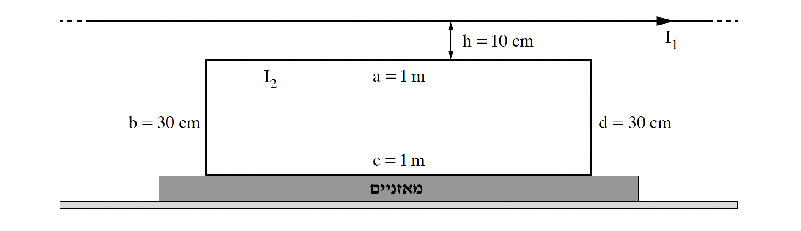
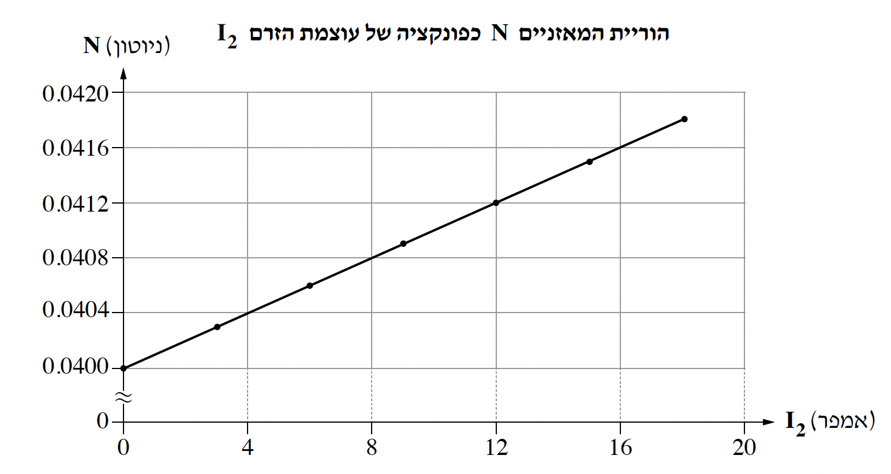

שאלה 4
תלמידה ערכה ניסוי באמצעות המערכת המוצגת בתרשים שלפניכם. המערכת בנויה מכריכה מלבנית מוליכה המונחת על מאזניים. מישור הכריכה מאונך לפני המאזניים.
אורכי הצלעות של הכריכה a = c = 1m ו-b = d = 30cm. מסת הכריכה, m, אינה נתונה. בגובה h = 10cm מעל הצלע a של הכריכה מתוח תיל מוליך ישר וארוך מאוד ביחס לצלעות הכריכה. התיל מקביל לצלעות a ו-c של הכריכה. בתיל הישר זורם זרם שעוצמתו I1 וכיוונו ימינה (ראו תרשים).

מהלך הניסוי: התלמידה העבירה בכריכה כמה זרמים בזה אחר זה. כל אחד מן הזרמים היה בעוצמה אחרת אך כולם באותו הכיוון (כיוון זה אינו נתון). בכל מדידה קראה התלמידה את עוצמת הזרם בכריכה, I2, ואת הוריית המאזניים, N. בכל מהלך הניסוי לא השתנו המרחקים הנתונים ועוצמת הזרם בתיל, I1.
הצגת תוצאות המדידות: על פי תוצאות המדידות התלמידה סרטטה גרף המתאר את הוריית המאזניים, N, כפונקציה של עוצמת הזרם בכריכה, I2.

בשאלה זו יש להזניח את השפעת השדה המגנטי של כדור הארץ.
מהו הכיוון של הכוח המגנטי השקול הפועל על הכריכה? נמקו את תשובתכם.
קבעו אם גודל הכוח המגנטי הפועל על צלע a קטן מגודל הכוח המגנטי הפועל על צלע c, גדול ממנו או שווה לו. נמקו את קביעתכם.
(8 נקודות)
מהו הכיוון של הזרם I2 בצלע a - ימינה או שמאלה? נמקו את תשובתכם.
סרטטו במחברתכם את הכריכה המלבנית. על כל אחת מצלעות הכריכה סמנו את הכיוון של הכוח המגנטי שהשדה המגנטי שמקורו ב-I1 מפעיל עליה.
(7 נקודות)
בטאו את הוריית המאזניים, N, כפונקציה של עוצמת הזרם בכריכה, I2. השתמשו בקבועים: a, b, h, m, g, I1, μ0. (7 נקודות)
חשבו את m, מסת הכריכה. (5 נקודות)
חשבו את עוצמת הזרם בתיל, I1. (6.33 נקודות)